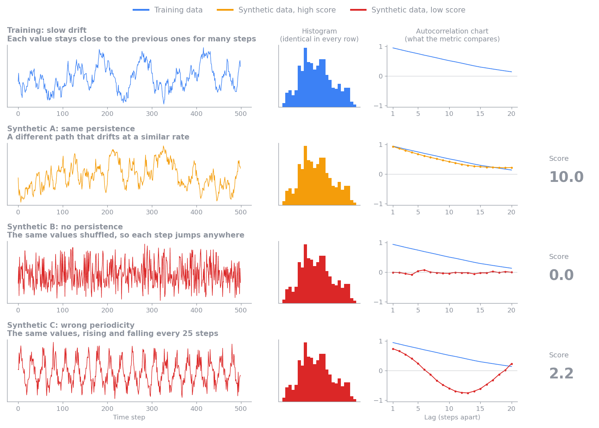
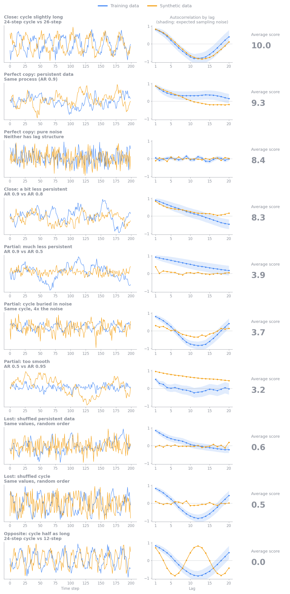
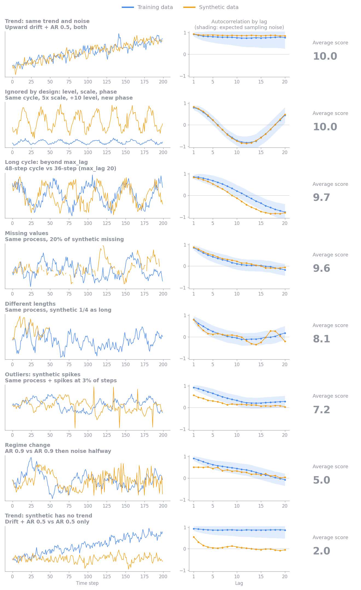
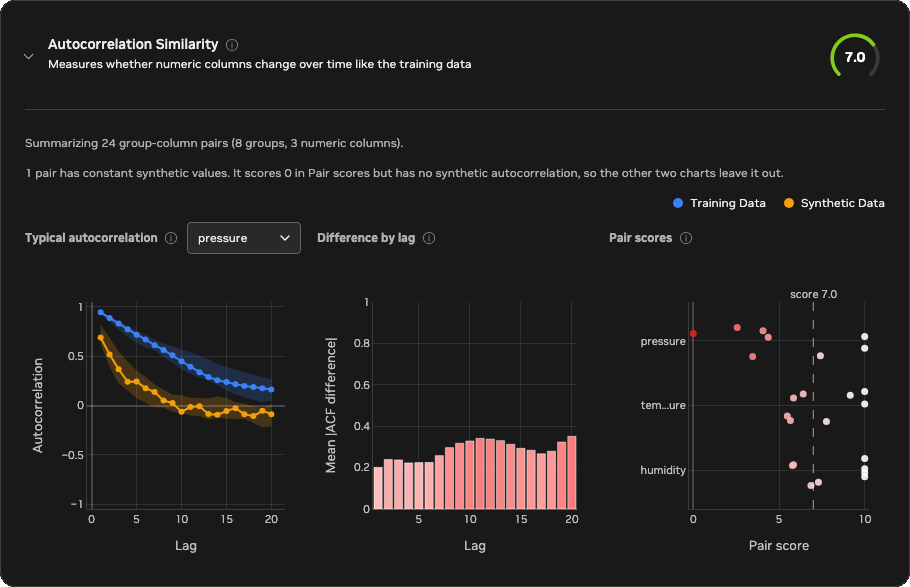

Autocorrelation Similarity¶
Autocorrelation Similarity checks whether synthetic numeric columns change over time the way the training columns do. Column-level metrics, such as histograms, compare which values appear. This metric compares the order those values appear in: how strongly each value resembles the values a few steps earlier.
Two properties matter most:
- Persistence, or memory: how long a value stays close to its recent past. A slowly drifting temperature has strong persistence, and a value that jumps anywhere at every step has none.
- Periodicity: whether values rise and fall in a repeating cycle, or rhythm, such as a daily or weekly pattern, and how long that cycle is.
The figure below shows one training sequence and three synthetic sequences that all contain exactly the same values, so their histograms are identical. Only the order differs. The right column shows each sequence's autocorrelation chart: the correlation between each value and the value 1, 2, and up to 20 steps later. In this guide, "autocorrelation" on its own means this correlation, and "the score" means the 0–10 Autocorrelation Similarity score.

- Synthetic A takes a different path but drifts at a similar rate. Its autocorrelation follows the training curve, so it scores 10.0.
- Synthetic B is the training values shuffled. Each value is unrelated to the one before it, so its autocorrelation is flat at 0 and it scores 0.0.
- Synthetic C repeats every 25 steps. Its autocorrelation dips negative half a cycle later and rises again, which the training data never does. It scores 2.2, because only the first few lags match.
Reading the score¶
A higher score means the synthetic data's autocorrelation is closer to the training data's. Differences small enough to be explained by chance do not lower the score, so synthetic data generated by the same process as the training data scores near 10. When the training data has structure over time, synthetic data with none of that structure left scores near 0. If the training data has no structure either, for example if it is already shuffled, shuffled synthetic data matches it and scores high.
The score covers only how values depend on their own recent past. A low score means the synthetic data does not reproduce the persistence or periodicity of the training data. The values themselves, their distributions, and the relationships between columns can still match well, as with the shuffled series in the figure above, which has exactly the training values and scores 0.0. Read this score alongside the Synthetic Quality Score, and weigh it by how much your use case depends on behavior over time.
Example scenarios¶
The figures below show how the metric scores one group-column pair in a range of situations, ordered from the highest average score to the lowest. Each row compares one training series (blue) with one synthetic series (orange):
- The left chart shows the values.
- The middle chart shows their autocorrelation at lags 1 to 20. A lag is the number of steps between the two values being compared. The shaded band is the sampling noise the score allows for.
- The right column shows the average score across 200 random pairs from the same scenario, with 200 points per sequence. The plotted pair is one of them, and a single pair can land a point or more away from the average.


With about 200 points per sequence, scores fall into rough tiers:
- About 8 to 10: the synthetic data keeps the training data's persistence and cycles. Two pure-noise series average about 8.5, because a single pair's chance differences sometimes exceed what sampling noise predicts.
- About 5 to 8: the synthetic data keeps most of its structure with a mild loss, for example occasional outlier spikes (about 7) or a regime change partway through the sequence (about 5).
- About 2 to 5: the synthetic data keeps some structure but loses a large part of it, for example much weaker persistence, a cycle buried in noise, or too much smoothness.
- About 0 to 2: the synthetic data has lost its structure over time, as when values are shuffled, a trend is missing, or a cycle has the wrong length.
- 0: the synthetic values are constant while the training values vary. If the training values are constant, autocorrelation is undefined, so the metric skips that group-column pair instead of scoring it.
Sequence length affects how much the score can tell apart. Longer sequences
measure autocorrelation more precisely, so a real difference stands out more
clearly and scores lower. Shorter sequences carry less evidence, so the metric
gives them more benefit of the doubt and their scores bunch toward the middle.
Synthetic data from the same process scores highly at any length. The metric
also cannot see patterns longer than max_lag steps, and by design it ignores
differences in level, scale, and phase, as the additional scenarios show.
These tiers are a guide rather than pass or fail thresholds. Within one report,
every group-column pair uses the same columns, groups, and max_lag. When you
compare scores across runs, check that those settings and the input data's
columns and groups are the same, because changing them changes what the score
measures. Whether a
difference matters depends on the downstream use case. For example, preserving
short-term persistence may be critical for sensor simulation but unimportant
for a workload that uses only long-term totals.
Reading the report charts¶
The Autocorrelation Similarity card is in the automatically generated HTML quality and privacy report. Select Synthetic Quality in the report's navigation and find the card in the Time-Series Metrics panel, then expand it to see three charts built from every evaluated group-column pair. Select the info icon next to a chart title for a short reminder of how to read it.

The example above comes from a dataset of eight sensors, grouped by sensor ID,
with three numeric columns: temperature, pressure, and humidity. The
synthetic data reproduces sensor 0 closely and drifts further from the
training data with each sensor after it: weaker persistence, a stretched
cycle, and more noise. Sensor 7 also has a constant pressure series. You
can confirm each of these details in the report itself: use the column
selector on the first chart, and hover over any bar or point to see its exact
values.
- Typical autocorrelation
- What it shows: the median training and synthetic autocorrelation at each lag for one numeric column. The shaded bands cover the middle 50% of groups. The chart opens on the column with the lowest mean pair score. Use the column selector next to the title to switch columns. In good synthetic data, the blue and orange lines overlap.
- In this example: the chart opens on
pressure. Training autocorrelation decays slowly from about 0.9, while the synthetic median drops to about 0.25 by lag 4 and to 0 by lag 10, so most synthetic sensors lost part of the training data's persistence. - Difference by lag
- What it shows: the mean absolute difference between the training and synthetic autocorrelation of each group-column pair at each lag, across all numeric columns. Hover over a bar to see its exact value. The y-axis always spans at least 0 to 1, so short, pale bars mean small differences (ideal), and bars turn red as the difference approaches 0.5 or more. The color reaches full red at 0.5 because a gap that large already means the synthetic data has lost most of the training pattern at that lag, so larger differences stay full red. Differences that grow with lag point to lost long-range persistence, and a peak at one lag points to a missing or shifted cycle.
- In this example: the difference grows from about 0.2 at lag 1 to about 0.3 to 0.35 from lag 9 onward, so the loss is largest for long-range persistence.
- Pair scores
- What it shows: the score of every group-column pair on the 0–10 scale,
with the overall score marked by the dashed line. Each point is one group,
shaded from white at 10 (excellent) to red at 0 (poor), and each row is one column. Points
within a row are spread out vertically so that equal scores stay visible.
Hover over a point to see its full column name, group, and score. The chart
shows the 8 lowest-scoring columns. Column names longer than 10 characters
are shortened to their first and last three characters, as with
tem...ure. - In this example: each point is one sensor, and each column's scores fall
steadily from 10 for the first sensors toward the last ones.
temperatureandhumiditystay above about 5.5, whilepressurefalls to between about 2.5 and 4.5 for sensors 3 to 6 and to 0 for the constant sensor 7 series. The gap between the overall score and 10 therefore comes mostly from the later sensors and frompressure, rather than from every pair equally.
A pair whose synthetic values are constant scores 0 but has no synthetic
autocorrelation, so only Pair scores shows it. In the example, the pressure
point at 0 is sensor 7, and the note above the charts reports it. The
Typical autocorrelation median for pressure uses the remaining seven sensors.
Configuration¶
Time-series evaluation runs by default whenever time_series.is_timeseries is
true. It computes the metric and adds a Time-Series Metrics panel to the
Synthetic Quality section of the HTML evaluation report. Set
evaluation.time_series.enabled: false to skip it. Setting it to true
without time-series mode is a configuration error.
time_series:
is_timeseries: true
timestamp_column: time
evaluation:
time_series:
enabled: null # null follows time_series.is_timeseries
autocorrelation:
value_columns: null
max_lag: 20
min_points: 4
max_groups: 128
value_columns: null evaluates every column that both datasets share and that
is inferred as numeric. Set an explicit list to evaluate only selected numeric
columns. Values are ordered by time_series.timestamp_column and split into
sequences by data.group_training_examples_by.
If more than max_groups groups are shared, the metric evaluates a reproducible
random sample of groups instead of the ones whose labels sort first. The result
reports the total, evaluated, and omitted shared-group counts. Changing
value_columns, max_lag, or the grouping configuration changes what the
aggregate score measures.
Limitations¶
Autocorrelation summarizes the average linear relationship between a numeric column and its own past values. Different sequences can have similar autocorrelation profiles, so a high score does not mean that individual events, amplitudes, or phases match. A single profile can also hide a change in behavior partway through a sequence, and irregular sampling intervals can make lag comparisons misleading. Binary and categorical columns need different measures and are not selected automatically. The metric does not establish causality or show whether the synthetic data memorizes training sequences. The score summarizes all lags and groups in one number, so it can't tell you about a particular lag range or sequence length. To judge whether the synthetic data preserves the behavior your use case needs, look at the detailed report charts for the lags, columns, and groups that matter to you.
Calculation¶
For every usable group and numeric column, the metric computes the Pearson
correlation between values at positions t and t + lag, for each lag from 1
to max_lag. This list of correlations is the column's autocorrelation
profile. Each lag uses only pairs of values that are both present in that
sequence and requires at least three pairs. The metric then compares the
training profile \(r^{\text{train}}_k\) and the synthetic profile
\(r^{\text{synth}}_k\) lag by lag, in three steps:
- Estimate the sampling noise at each lag. Bartlett's formula gives the standard error of an autocorrelation at lag \(k\) measured from \(n_k\) pairs, \(\sqrt{(1 + 2 \sum_{j<k} r_j^2) / n_k}\). Each measured \(r_j^2\) includes about \(1 / n_j\) of noise, so the metric uses \(\max(0, r_j^2 - 1 / n_j)\) instead, which keeps short sequences from overstating their noise. The noise allowance \(\sigma_k\) combines the training and synthetic standard errors in quadrature.
- Weight each lag by \(w_k = 1 / \sigma_k^2\), so precisely measured lags count more. Sum the squared gaps between the profiles across lags, and subtract the squared gap that sampling noise alone would produce, \(\sigma_k^2\). What remains is the excess difference, floored at 0.
- Compare the excess with the structure present at each lag, \(m_k = \max(|r^{\text{train}}_k|, |r^{\text{synth}}_k|, \sigma_k)\). Using the larger of the two profiles penalizes lost structure and invented structure alike:
Subtracting the expected noise before taking the square root means that two sequences from the same process do not lose points on average, at any length, and pooling the lags before the square root keeps several small chance gaps from adding up to a large penalty. The result is clipped to the range 0 to 1. The final 0–10 score is ten times the mean profile similarity across group-column pairs. Therefore, 10 means the profiles agree within sampling noise, and 0 means none of the training data's structure over time is reproduced.
Missing and non-finite values stay as gaps in their original positions, so removing them cannot pull distant values next to each other. A comparison is skipped when the training series is constant, because its autocorrelation is undefined. If the training series varies but the synthetic series is constant, that comparison scores 0 to represent complete loss of variation over time.